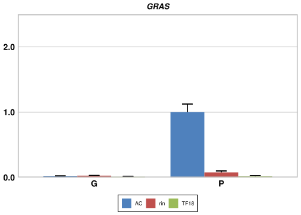
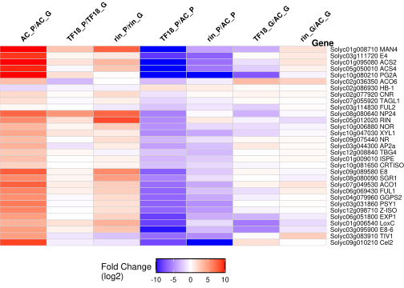
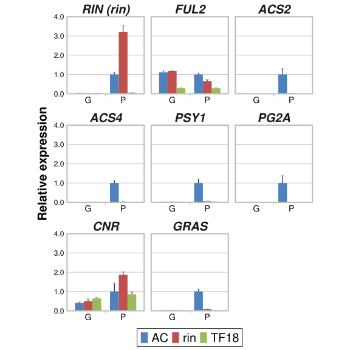
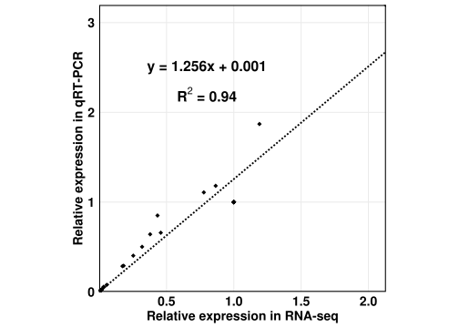

This document loads the files and data needed to do the analysis performed in this project.
Load Packages
This chunk loads the packages necessary to run the next chunk.
# Packages used should be installed before loadinglibrary("tidyverse") # Used for the download function and mapping
── Attaching core tidyverse packages ──────────────────────── tidyverse 2.0.0 ──
✔ dplyr 1.1.4 ✔ readr 2.1.5
✔ forcats 1.0.0 ✔ stringr 1.5.1
✔ ggplot2 3.5.1 ✔ tibble 3.2.1
✔ lubridate 1.9.4 ✔ tidyr 1.3.1
✔ purrr 1.0.4
── Conflicts ────────────────────────────────────────── tidyverse_conflicts() ──
✖ dplyr::filter() masks stats::filter()
✖ dplyr::lag() masks stats::lag()
ℹ Use the conflicted package (<http://conflicted.r-lib.org/>) to force all conflicts to become errors
library("readxl") # Used to read the excel files
Getting the Data
The data is placed in excel files from zenodo.org. Each file is loaded into the data/_raw in order to use it later in this project. During loading the names of each file is also cleaned for better readability. All files are loaded even though only supplemental data set 1 is used in later analysis. This enables getting an overview of all the data available.
# Pulls the data from the online source into _raw/## Creating directories if they don't existraw_dir <-"../data/_raw/"if( !dir.exists("../data/") ){dir.create(path ="../data/")}if( !dir.exists(raw_dir) ){dir.create(path = raw_dir)}## Defining what files to be extracted from zenodofiles <-tibble(name =c("tpc119453_Supplemental Data Set 1.xlsx","tpc119453_Supplemental Data Set 2.xlsx","tpc119453_Supplemental Data Set 3.xlsx","tpc119453_Supplemental Data Set 4.xlsx","tpc119453_Supplemental Data Set 5.xlsx","tpc119453_Supplemental Data Set 6.xlsx"),url =str_c("https://zenodo.org/records/4936221/files/",URLencode(name), # converting string to comply with URL format"?download=1") # adding query string to request download )## The function that downloads each file and clean the name (to not have spaces)get_file <-function(name, url) {# Replace spaces in the file name with underscores clean_name <-str_replace_all(name, " ", "_")# Create destination path for the file dest <-str_c(raw_dir, clean_name)# Only run if file at destination doesn't existif (!file.exists(dest)) {download.file(url, destfile = dest, mode ="wb") } dest}## Running the downloadpaths <-map2_chr(files$name, files$url, get_file) #mapping that uses two arguments for a function (and makes it into a character)
Additional data was imported from NCBI GEO (Genome Expression Omnibus). This data was not accessible at zenodo.org and thereby needed to be downloaded on it’s own.
# Downloading the zipped textfile from ncbidownload.file(url ="https://ftp.ncbi.nlm.nih.gov/geo/series/GSE49nnn/GSE49289/suppl/GSE49289_Fujisawa_etal_NGS_FULRNAi_RPKM.txt.gz",destfile ="../data/_raw/GSE49289_Fujisawa_etal_NGS_FULRNAi_RPKM.txt.gz",mode ="wb")
2. Clean Data
# Packages used should be installed before loadinglibrary("tidyverse")library("readxl")library("here")
# Make a tibble of the desired gene IDs for semi_joingenes <-tibble(Gene_ID =c("Solyc07g052960","Solyc01g008710","Solyc03g111720","Solyc01g095080","Solyc05g050010","Solyc10g080210","Solyc02g036350","Solyc02g086930","Solyc02g077920","Solyc07g055920","Solyc03g114830","Solyc08g080640","Solyc05g012020","Solyc10g006880","Solyc10g047030","Solyc09g075440","Solyc03g044300","Solyc12g008840","Solyc01g009010","Solyc10g081650","Solyc09g089580","Solyc08g080090","Solyc07g049530","Solyc06g069430","Solyc04g079960","Solyc03g031860","Solyc12g098710","Solyc06g051800","Solyc01g006540","Solyc03g095900","Solyc03g083910","Solyc09g010210"))Data_set_1_clean <- Data_set_1 |># Find the first 8 columns and all coloumns of fold changeselect(matches("\\.\\.\\.[1-8]$"), starts_with("FC")) |># Renaming coloumn namesrename("Gene_ID"=1,"Description"=2,"AC_G"=3,"AC_P"=4,"TF18_G"=5,"TF18_P"=6,"rin_G"=7,"rin_P"=8,"FC_AC(P/G)"=9,"FC_TF18(P/G)"=10,"FC_rin(P/G)"=11,"FC_TF18_P/AC_P"=12,"FC_rin_P/AC_P"=13,"FC_TF18_P/rin_P"=14,"FC_TF18_G/AC_G"=15,"FC_rin_G/AC_G"=16,"FC_TF18_G/rin_G"=17, ) |># set Gene_ID as a factor for later plottingmutate(Gene_ID =as_factor(Gene_ID)) |># Semi_join to only get the Gene_IDs used in the papersemi_join(genes, by ="Gene_ID") |>#Divide mean and standard deviation into each their colummeseparate_wider_delim(c(AC_G, AC_P, TF18_P, TF18_G, rin_P, rin_G), delim =" ± ",names =c("mean", "sd"),names_sep ="_") |>#Adding Gene_name coloumn to the endmutate(Gene_Name =str_extract(Description, "\\(([^()]*)\\)\\s*$", group =1), #Finding the last parenthesis and extraction the text inside it to gene_nameDescription =str_remove(Description, "\\s*\\([^()]*\\)\\s*$") #Removes the gene name parenthesis from the description ) |># manually extract the last two gene name, that are different in plotsmutate(Gene_Name =if_else(str_detect(Description, "\\bGRAS\\b"), "GRAS", Gene_Name)) |>mutate(Gene_Name =if_else(str_detect(Gene_Name, "\\bTomLoxC\\b"), "LoxC", Gene_Name)) |>mutate(Gene_Name =if_else(str_detect(Gene_Name, "\\bTDR4\\b"), "FUL1", Gene_Name))
Save the workable files in data/ folder
# use rds to save data typeswrite_rds(Data_set_1_clean, file ="../data/02_df1_clean.rds")#Data_Set1 <- read_csv("../data/data_set_1_clean.csv", show_col_types = F)
3. Augment Data
# Packages used should be installed before loadinglibrary("tidyverse")
In order to reproduce the supplementary figure 1A, we must create normalized data according to the authors descriptions. The purpose of this figure is to check that the two seperate RNA analyses, quantitative reverse transcriptase PCR and RNA sequencing, are compatible, which is required to asses the transcriptome profile of the genotypes in the article.
According to the figure text in the ‘Supplementary Table 1’ (link to zip file), the RPKM (reads per kilobase per million mapped reads) data must all be normalized such that the wild type expression after 45 days of growth (45 DAP or “P age”) is equal to 1.
Creating relative expression data from the qRT-PCR experiment
As we are going to be working with this data separately in an analysis, we are going to create a new tibble, with the standardized columns, as opposed to adding it to the already cleaned data set.
Data_set_1_sf1 <- Data_set_1_clean |>select(3:14,24) |>#select the RPKM datarelocate(Gene_Name) |>#moves gene name column to be the firstpivot_longer(cols =-Gene_Name, #only gene name is to be kept the same, remaining are pivoted#.value names the columns mean and sd, and keeps the numerical value of each rownames_to =c("Dataset", "Age", ".value"), names_sep ="_" ) |>#converts <chr> to <dbl> and removes ',' as thousands delimitermutate(across(c(mean, sd), parse_number)) |>group_by(Gene_Name) |>mutate(ref = mean[Dataset =="AC"& Age =="P"],mean_norm = mean / ref,sd_norm = sd / ref ) |>ungroup()Data_set_1_sf1
# A tibble: 192 × 8
Gene_Name Dataset Age mean sd ref mean_norm sd_norm
<chr> <chr> <chr> <dbl> <dbl> <dbl> <dbl> <dbl>
1 LoxC AC G 27.7 12.2 303. 0.0913 0.0402
2 LoxC AC P 303. 193. 303. 1 0.636
3 LoxC TF18 G 0.5 0.1 303. 0.00165 0.000330
4 LoxC TF18 P 1.6 0.8 303. 0.00527 0.00264
5 LoxC rin G 8.1 2.5 303. 0.0267 0.00824
6 LoxC rin P 140. 40 303. 0.463 0.132
7 MAN4 AC G 0 0 431. 0 0
8 MAN4 AC P 431. 169. 431. 1 0.391
9 MAN4 TF18 G 0 0 431. 0 0
10 MAN4 TF18 P 0.1 0 431. 0.000232 0
# ℹ 182 more rows
Save the workable files in data/ folder
# use rds to save data types write_rds(Data_set_1_sf1, file ="../data/03_sf1a_aug.rds")
Example graph
gene_id <-"GRAS"Data_set_1_sf1 |>filter(Gene_Name == gene_id) |>ggplot(aes(x = Age,y = mean_norm,fill = Dataset)) +geom_col(position ="dodge", width =0.8) +scale_fill_manual(values =c("#4f81bd","#c0504d","#9bbb59")) +geom_linerange(aes(ymin = mean_norm, ymax = mean_norm + sd_norm),position =position_dodge(width =0.8),size =0.8 ) +# cap at the top only (ymin = ymax, so no vertical part is drawn)geom_errorbar(aes(ymin = mean_norm + sd_norm, ymax = mean_norm + sd_norm),position =position_dodge(width =0.8),width =0.25,size =0.8) +scale_y_continuous(limits =c(0, 2.5),breaks =0:4,labels = scales::label_number(accuracy =0.1),expand =c(0, 0) ) +labs(title =bquote(bolditalic(.(gene_id)))) +theme_bw() +theme(plot.title =element_text(hjust =0.5),legend.position ="bottom", legend.title=element_blank(),legend.background =element_rect(colour ="black", fill ="white", linewidth =0.4), axis.title =element_blank(),axis.text.x =element_text(size =14, face ="bold", color ="black"),axis.text.y =element_text(size =14, face ="bold", color ="black"),panel.grid.major.x =element_blank(),panel.grid.minor =element_blank(),axis.ticks.y =element_blank(),axis.ticks.x =element_blank(),panel.grid.major.y =element_line(colour ="gray", linewidth =0.5),panel.border =element_rect(colour ="gray", fill=NA, linewidth=1.5))
Warning: Using `size` aesthetic for lines was deprecated in ggplot2 3.4.0.
ℹ Please use `linewidth` instead.

Creating relative expression data from the RNA-seq experiment
# A tibble: 48 × 4
Gene_Name Dataset Age RNA_seq_FC
<chr> <chr> <chr> <dbl>
1 ACS2 AC G 0.000376
2 ACS2 AC P 1
3 ACS2 rin G 0.00100
4 ACS2 rin P 0.0135
5 ACS2 TF18 G 0.000144
6 ACS2 TF18 P 0.000404
7 CNR AC G 0.253
8 CNR AC P 1
9 CNR rin G 0.319
10 CNR rin P 1.19
# ℹ 38 more rows
To make the supplementary figure 1b, we need to join the data of the current two files: Data_set_1_sf1 and Data_set_1_FC, as the y-values of the plot are the mean values from supplementary figure 1a, and the x-values are those that were normalized above. The joined data set will be named Data_set_1_sf2.
Data_set_1_FC have been filtered to include only those genes that are visualized in supplementary figure 1a, to allow this join. We only want to append values from _sf1 to this new data set, and we can therefore do an inner_join from the dplyr package.
# load the dataData_set_1_clean <-read_rds("../data/02_df1_clean.rds")
Initial data filtering
gene_order <-c("Solyc01g008710","Solyc03g111720","Solyc01g095080","Solyc05g050010","Solyc10g080210","Solyc02g036350","Solyc02g086930","Solyc02g077920","Solyc07g055920","Solyc03g114830","Solyc08g080640","Solyc05g012020","Solyc10g006880","Solyc10g047030","Solyc09g075440","Solyc12g075440","Solyc03g044300","Solyc12g008840","Solyc01g009010","Solyc10g081650","Solyc09g089580","Solyc08g080090","Solyc07g049530","Solyc06g069430","Solyc04g079960","Solyc03g031860","Solyc12g098710","Solyc06g051800","Solyc01g006540","Solyc03g095900","Solyc03g083910","Solyc09g010210")#Selection of columns for matrixheatmap_df <- Data_set_1_clean |>select( Gene_ID, Gene_Name,`FC_AC(P/G)`,`FC_TF18(P/G)`,`FC_rin(P/G)`,`FC_TF18_P/AC_P`,`FC_rin_P/AC_P`,`FC_TF18_G/AC_G`,`FC_rin_G/AC_G` ) |>rename("AC_P/AC_G"=3,"TF18_P/TF18_G"=4,"rin_P/rin_G"=5,"TF18_P/AC_P"=6,"rin_P/AC_P"=7,"TF18_G/AC_G"=8,"rin_G/AC_G"=9) |>filter(Gene_ID %in% gene_order) |># Only keep displayed genesmutate(Gene_ID =factor(Gene_ID, levels =rev(gene_order))) # order based on gene_order
Convert to Matrix
# Convert to numeric matrix for clusteringheatmap_mat <- heatmap_df |>select(-Gene_Name) |>column_to_rownames("Gene_ID") |>as.matrix()# Hierarchical clustering of geneshc <-hclust(dist(heatmap_mat, method ="euclidean"),method ="complete")
Create Dendogram
dhc <-as.dendrogram(hc)data <-dendro_data(dhc, type ="rectangle")p <-ggplot(segment(data)) +geom_segment(aes(x = x, y = y, xend = xend, yend = yend)) +# flip the dendogram up-to-right coord_flip() +# flip the dendogram right-to-leftscale_y_reverse(expand =expansion(mult =0)) +theme_minimal() +theme(plot.margin =margin(0, 0, 0, 0))p_dend <- p +theme_dendro()
Fetch Gene-ID and -Name for Sample Labels
gene_labels <- heatmap_df |>distinct(Gene_ID, Gene_Name) |>mutate(label =paste(Gene_ID, Gene_Name)) |>select(Gene_ID, label) |>deframe() # converts data frame to vector
cols_p <-colnames(heatmap_df[3:9])
Create Heatmap
p_heat <- heatmap_df |>pivot_longer(cols =-c(Gene_ID, Gene_Name),names_to ="Fold_Changes",values_to ="vals" ) |>ggplot(aes(x = Fold_Changes, y = Gene_ID, fill = vals)) +geom_tile(colour ="grey80", linewidth =0.2) +# Set colour gradientscale_fill_gradient2(low ="blue",high ="red",midpoint =0,limits =c(-10,10),oob = scales::squish # Set "out of boundary" values to be within the limits ) +# position x- and y-axis labels scale_x_discrete(position ="top", expand =c(0, 0), limits = cols_p) +scale_y_discrete(position ="right", expand =c(0, 0), labels = gene_labels) +# Remove x-labs(x =NULL, y =NULL, fill ="Fold Change\n(log2)") +# Place the y-axis label manuallyannotate("text",x =6,y =nrow(heatmap_mat) +1,label ="Gene",hjust =-2.5,fontface ="bold" ) +# Allows drawing of the y-axis label anywhere on the plotcoord_cartesian(ylim =c(0.5, nrow(heatmap_mat) +0.5),expand =FALSE, # Prevent annotation from expanding the plotting areaclip ="off" ) +theme_minimal() +theme(# Remove gridpanel.grid =element_blank(),# Remove axis ticks axis.ticks =element_blank(),# Position x axisaxis.text.x.top =element_text(angle =45,hjust =0,vjust =0,colour ="black",face ="bold" ),# Position y axisaxis.text.y.right =element_text(size =8,colour ="black" ),legend.position ="bottom",legend.frame =element_rect(color ="black"), #,plot.margin = margin(0, 0, 0, 0)plot.margin =margin(0, 0, 0, 0) # remove extra space around plot )p_heat

Combine the dendrogram and heatmap using patchwork
# Re-size the dendogram to match the heatmapp_dend <- p_dend +scale_x_continuous(limits =c(0.5, # start at the middle of the first tilenrow(heatmap_mat) +0.5), # end at the middle of the last tile expand =c(0, 0) # make sure no padding around the axes are added )p_combined <- p_dend + p_heat + patchwork::plot_layout(widths =c(1, 5)) # squeeze p_dend to 1/5th the width of p_heat p_combined
#load the datadata_subfig1A <-read_rds("../data/03_sf1a_aug.rds")
Generate plot for sub figure 1A
# Define the exact display order of the 9 target genes (fills left-to-right, top-to-bottom)gene_order <-c("RIN", "TDR4", "FUL2", "ACS2", "ACS4", "PSY1", "PG2A", "CNR", "GRAS")gene_labels <-c("RIN (rin)", "FUL1", "FUL2", "ACS2", "ACS4", "PSY1", "PG2A", "CNR", "GRAS")SubFig1A_plot <- data_subfig1A |>filter(Gene_Name %in% gene_order) |># Keep only the 9 genes needed for Figure 1Amutate(Gene_Name =factor(Gene_Name, levels = gene_order, labels = gene_labels)) |># Makes sure the graphs are in the correct orderggplot(aes(x = Age, y = mean_norm, fill = Dataset)) +geom_col(position ="dodge", width =0.75) +scale_fill_manual(values =c("#4f81bd", "#c0504d", "#9bbb59")) +geom_linerange(aes(ymin = mean_norm, ymax = mean_norm + sd_norm),position =position_dodge(width =0.75),linewidth =0.5) +geom_errorbar(aes(ymin = mean_norm + sd_norm, ymax = mean_norm + sd_norm),position =position_dodge(width =0.75),width =0.3,linewidth =0.5,color ="grey") +# Make the correct arrangement of the plots 3x3facet_wrap(~ Gene_Name, ncol =3, scales ="free_x") +# Small vertical tick between G and Pannotate("segment",x =1.5, xend =1.5,y =0, yend =-0.15,colour ="gray",linewidth =0.5 ) +# Sets the y-axis window from 0 to 4 without cutting off the tick at yend = -0.15coord_cartesian(ylim =c(0, 4), clip ="off") +# Controls the y-axis tick numbers (0.0, 1.0, 2.0, 3.0, 4.0)scale_y_continuous(breaks =0:4,labels = scales::label_number(accuracy =0.1),expand =c(0, 0) ) +facet_wrap(~ Gene_Name, ncol =3, scales ="free_x") +labs(y ="Relative expression", # Shared labelx =NULL) +theme_bw() +theme(aspect.ratio =1, # Square plotspanel.spacing.x =unit(0.8, "lines"), # Horizontal spacing between columnspanel.spacing.y =unit(0.8, "lines"), # Vertical spacing between rowsstrip.background =element_blank(), # Remove header from each individual plotstrip.text =element_text(size =20, face ="bold.italic", margin =margin(b =3)),strip.clip ="off", # Prevents overlap issues# Legend box stylinglegend.position ="bottom", legend.title =element_blank(),legend.text =element_text(size =20),legend.key.size =unit(0.45, "cm"),legend.background =element_rect(colour ="black", fill ="white", linewidth =0.4), # Axis titles and tick labelsaxis.title.x =element_blank(),axis.title.y =element_text(size =20, face ="bold", margin =margin(r =8)),axis.text.x =element_text(size =14, color ="black"),axis.text.y =element_text(size =12, color ="black"),axis.ticks =element_blank(), # Hides small tick marks on axes# Gridlines and panel borderspanel.grid.major.x =element_blank(),# Removes vertical gridlinespanel.grid.minor =element_blank(), # Removes minor gridlinespanel.grid.major.y =element_line(colour ="gray", linewidth =0.4), # Keeps horizontal gridlinespanel.border =element_rect(colour ="gray", fill =NA, linewidth =1) # Border around each square )# Save the file for resultsggsave(filename ="../results/04_SubFig1A.png",plot = SubFig1A_plot,width =8,height =8,units ="in",dpi =300)SubFig1A_plot

Sub Figure 1B
Load data for sub figure 1B
#load the datadata_subfig1B <-read_rds("../data/03_sf1b_aug.rds")
# Defining the equation and the R^2 value of the linear fit for laterfit <-lm(mean_norm ~ RNA_seq_FC, data = data_subfig1B)intercept <-round(coef(fit)[1], 3)slope <-round(coef(fit)[2], 3)r2 <-round(summary(fit)$r.squared, 3)# Build the formatted label string (handles + or - sign automatically)sign_str <-if_else(intercept >=0, "+", "-")eq_line <-str_glue("bold('y = {slope}x {sign_str} {abs(intercept)}')")r2_line <-str_glue("bold('R'^2*' = {r2}')")# Plottingsubfig1B_plot <- data_subfig1B %>%ggplot(aes( x = RNA_seq_FC,y = mean_norm))+# Diamond shapes for pointsgeom_point(shape =18, size =2, color ="black")+geom_smooth(method = lm, formula = y ~x, linetype ="11", linewidth =0.9, color ="black", se =FALSE)+# Inserting the equation and R^2 in the plotannotate("text",x =0.8, y =2.5,label = eq_line,parse =TRUE,size =5.5 ) +annotate("text",x =0.8, y =2.2,label = r2_line,parse =TRUE,size =5.5 ) +labs(x ="Relative expression in RNA-seq", y ="Relative expression in qRT-PCR")+# Make the plot start in (0,0)scale_y_continuous(expand =c(0,0) )+scale_x_continuous(expand =c(0,0) )+theme_minimal()+#Formatting the plot to look like the originaltheme(aspect.ratio =1, # Square plotaxis.title.x =element_text(size =14, face ="bold"),axis.title.y =element_text(size =14, face ="bold"),axis.text.x =element_text(size =14, face ="bold", color ="black"),axis.text.y =element_text(size =14, face ="bold", color ="black"),panel.grid.minor =element_blank(),panel.border =element_rect(colour ="black", fill =NA, linewidth =1) )# Save the file for resultsggsave(filename ="../results/04_SubFig1B.png",plot = subfig1B_plot,width =8,height =8,units ="in",dpi =300)subfig1B_plot

6. Subfigure 1B
library("tidyverse")library("broom") # devtools::install_github("tidymodels/broom")#library("cowplot") # Not super needed
d <-read.delim("../data/_raw/GSE49289_Fujisawa_etal_NGS_FULRNAi_RPKM.txt.gz", skip =1, row.names =1, check.names =FALSE)
Clean/tidy Data
Making this data set tidy might seem a bit reversed because there are so many genes and only 9 samples. The data thereby is made extremely wide when converted into a tidy tibble. However this is needed in order to make the PCA analysis where each gene is a variable and the samples are observations. Furthermore we can in this way add the variable/coloumns of metadata of which sample we are working with (AC, TF18 or rin) and what their status where when taken (where they pink or green).
# Making the data tidy with genes as rows and each sample as a coloumn# Transposing the data so the variables (genes) are coloumns and observations (samples) are rowsd_tidy <- d |>rownames_to_column("gene") |># Making a column of genes instead of just hvaing the rownamespivot_longer(-gene, names_to ="sample_id", values_to ="rpkm") |># Pivot everything but genes to longer (meaning all the samples)pivot_wider(names_from = gene, values_from = rpkm) |>separate(sample_id, sep =" ", into =c("sample", "rep")) |>separate(sample, sep ="-", into =c("sample", "status"))
The data is now cleaned with each its variable as column and each observation as a row.
Augmentation..
Some genes do not have any RPKM values and will therefore be dropped in this augment chunk. We also only choose numeric columns to not get the metadata into the analysis.
# Scale data to unit variancepca_fit <- d_tidy |>select(where(is.numeric)) |># retain only numeric columnsselect(where(~var(.x) >0)) |># retain only columns with values above 0, else scale is failingmutate(across(where(is.numeric), ~log2(.x +1))) |># adding log trasnformation to avoid skewed RPKM dataprcomp(scale. =TRUE) # do PCA on scaled data
Plotting
# Plot data in PC coordinatespca_fit |>augment(d_tidy) |># add original dataset back in to get the metadataggplot(aes(.fittedPC1, .fittedPC2, fill = status, shape = sample)) +geom_point(size =3) +scale_fill_manual(values =c(Green ="darkgreen", Pink ="hotpink"),guide =guide_legend(override.aes =list(shape =21))) +scale_shape_manual(values =c(AC =21, rin =22 , TF18 =24)) +theme_minimal(base_size =12)